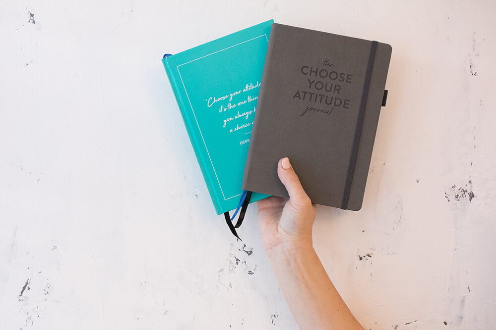

IDILIO Designs
INTRODUCING THE 2022 HOLIDAY COLLECTION
This holiday, we're focusing on connection & care, chosen family & cosmic wanderings.
- TAKE GOOD CARE OF YOURSELF MUG: Wrap your hands around something warm that brings you joy, and remember that you are taking good care of yourself. Just by taking a couple moments to slow down and fill your belly with warmth. Ceramic mug. Microwave and dishwasher safe. Holds 12 oz.
- SEASON OF SLOWNESS: A holiday agnostic winter wish for someone you love to remind them to take it easy this the season. 4.25" x 5.5". Digitally Printed on archival-quality card stock with a kraft envelope.
- ME AND YOU BLANKET: Our newest daydream of resting with someone you love. 50" x 60". 100% cotton woven blanket made in the USA.
- CHOSEN FAMILY BOX SET: Send a card to your chosen family and let them know they are yours, whether or not you share the same DNA. Each set includes 5 cards, 1 of each: Chosen Family Tree, Together, The Most Comfortable Time, Season of Slowness, & Holiday Snap. Box sets save $9.50—that is almost 2 cards for free. Individual cards are $5.50 a piece.Letter-pressed and digitally printed cards on archival-quality card stock with a snocone envelope. 
- MOMENTS OF JOY: What could be cozier than watching the snow fall while you are sipping something warm? Send this to someone you love while gazing out at the winter landscape. 4.25" x 5.5". Digitally Printed on archival-quality card stock with a kraft envelope.
- MOON CYCLES GUIDED JOURNAL It's A Phase We're Moving Through Use this guided journal to follow the shifting phases of the moon and to chart your emotions as you move through time and space. The moon is always up to something—connect the dots between your experience in the world and the moon's cycle. The journal is divided by sections based on moon phase. You can dip in and out anytime, and use it for years, because it doesn't include calendar dates. Each section starts with the moon phase and a prompt to help you start writing. Cosmically and eternally, the moon is always by your side. Written, Designed, and printed in the USA.
- Best-selling products
- New products